horen
to hear
regelmatigrang 262Abstract & generalgetekend
- Scene
- one adult sits reading at a table and turns the head sharply towards a doorbell beside the open door, the book still open in the hands; three short curved lines come from the bell. Nobody else is in the room.
- Must read
- a head turned sharply towards a ringing bell.
- Avoid
- a hand cupped behind the ear, leaning towards a radio (luisteren); a person speaking into a phone (bellen); a person opening the door to a visitor (openen); eyes on the book and the head still (lezen).
- Contrast
- Pair with luisteren. Same adult in the same room: the head snaps round towards the sound here, the body leans in with a hand behind the ear there.
- Alt text
- Iemand aan tafel met een open boek draait het hoofd snel naar een rinkelende bel bij de deur.
horen.png · rang 262 · A1 regelmatig · lexicon woorden.tsv
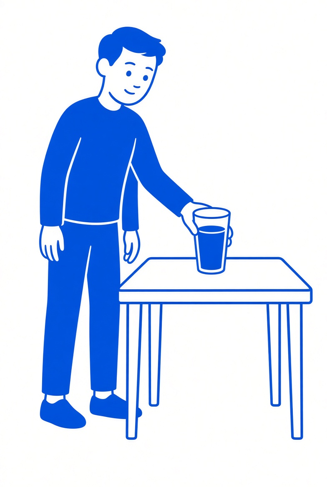
zetten
to put (upright)
regelmatigrang 271Movement & positiongetekend
- Scene
- one adult stands at a plain table and lowers a full glass of water with one hand until its base touches the table top; the base is just meeting the wood and the fingers are still round the glass. The eyes are on the glass and the table is bare.
- Must read
- a glass still held in the hand while its base lands on the table.
- Avoid
- a glass lying on its side on the table (leggen); a glass planted flat with both hands already off it (neerzetten); a glass lifted off the table (pakken); a bottle at the lips (drinken).
- Contrast
- Pair with leggen. Same hand on the same table: the object stands upright as its base lands here, it lies flat under a smoothing palm there.
- Alt text
- Een volwassene brengt een glas omlaag naar de tafel; de bodem raakt de tafel en de vingers houden het glas nog vast.
zetten.png · rang 271 · A1 regelmatig · lexicon woorden.tsv
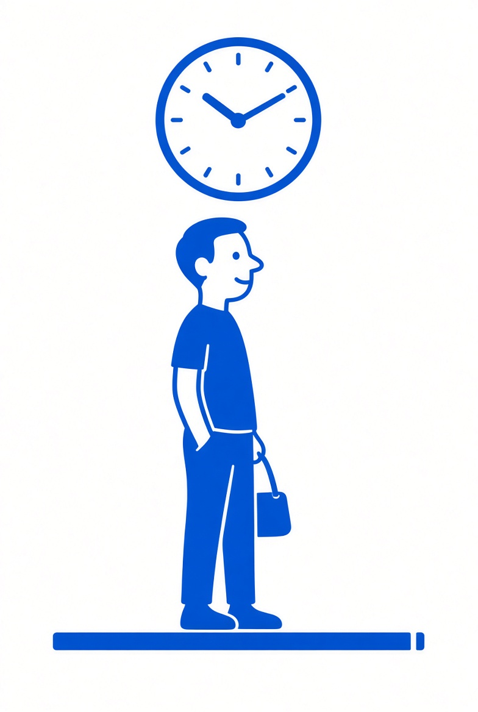
wachten
to wait
regelmatigrang 277Timegetekend
- Scene
- one adult stands on a bare platform with the face turned towards the right edge, arms hanging, a small bag in one hand. A large round clock hangs high on the wall. There is no train, no track in view and nobody else in the picture.
- Must read
- one person standing still, facing forward, under a large round clock.
- Avoid
- one adult mid-stride walking left to right (lopen); a hand held up flat towards a car with its brake lights on (stoppen); a person running with speed lines (rennen); a seated queue of people; a calendar.
- Alt text
- Iemand staat stil op een leeg perron met een tas, onder een grote ronde klok.
wachten.png · rang 277 · A1 regelmatig · lexicon woorden.tsv

halen
to fetch
regelmatigrang 306Abstract & generalgetekend
- Scene
- one adult walks back into a kitchen through an open doorway carrying a bottle of milk in one hand, the other hand reaching to set it on the table where a second adult sits waiting with an empty glass.
- Must read
- a bottle carried back to a person who waits with an empty glass.
- Avoid
- a mug lifted off a shelf (pakken); a bottle passed over a shop counter (kopen); a bottle tipped to the mouth (drinken); a bottle pressed to the chest while standing still (dragen).
- Alt text
- Iemand komt door een deur binnen met een fles melk voor iemand die met een leeg glas aan tafel wacht.
halen.png · rang 306 · A1 regelmatig · lexicon woorden.tsv

delen
to share
regelmatigrang 323Money & tradegetekend
- Scene
- two adults stand close together facing each other and each grips one half of the same long loaf of bread, both hands on it. The loaf is at the moment of breaking, one end tilted away and a few crumbs falling between them. Both look at the bread.
- Must read
- two pairs of hands breaking one loaf apart between them.
- Avoid
- a slice held out in one hand towards another person (geven); coins and notes on a table between two people (betalen); an apple bag held out over a market stall (verkopen); one adult carrying a full box alone (dragen).
- Alt text
- Twee volwassenen houden samen een brood vast en breken het midden door; kruimels vallen.
delen.png · rang 323 · A1 regelmatig · lexicon woorden.tsv
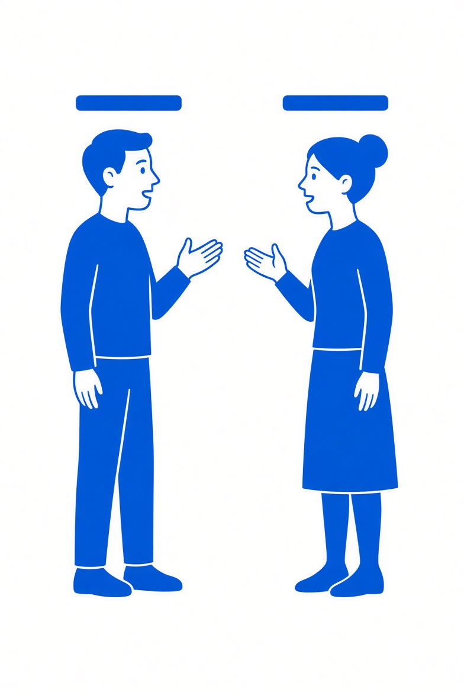
praten
to talk
regelmatigrang 327Communication & languagegetekend
- Scene
- two adults stand facing each other half a metre apart, both with open mouths caught mid-word, one hand lifted and gesturing. Two short plain bars float above and beside each head, one bar per person. No other person is in the picture, and the bars carry no letters.
- Must read
- two people facing each other with an open mouth each and a plain bar above each head.
- Avoid
- one adult alone facing the viewer with a speech bubble (spreken); one adult holding a phone hard against an ear (bellen); a raised finger and a silent second person (vertellen); a row of seated listeners (luisteren).
- Alt text
- Twee volwassenen staan tegenover elkaar, mond open, met boven elk hoofd een korte streep.
praten.png · rang 327 · A1 regelmatig · lexicon woorden.tsv
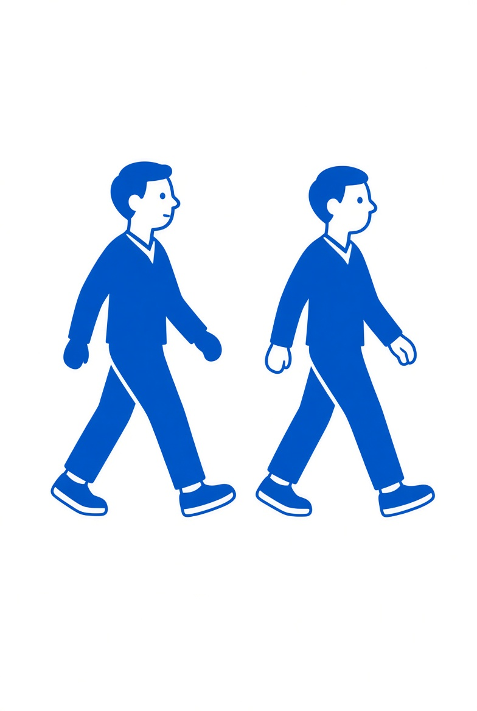
volgen
to follow
regelmatigrang 335Movement & positiongetekend
- Scene
- one adult walks from left to right along the bottom of the frame, and two metres behind them a second adult takes a stride in the same direction, head up, eyes on the walking gap between them. Plain ground, no path marks.
- Must read
- one adult walking behind another at a short distance, both heading the same way.
- Avoid
- two people walking side by side, arms swinging together (samen lopen); a person leading the way and looking back at a second one (leiden); a person at a corner turning round (keren); an arrow or a dotted trail.
- Contrast
- Pair with leiden. Same two walkers in a line: the same adult trails behind here, the raised arm and the front place are there.
- Alt text
- Een volwassene loopt een paar stappen achter een ander in dezelfde richting.
volgen.png · rang 335 · A1 regelmatig · lexicon woorden.tsv
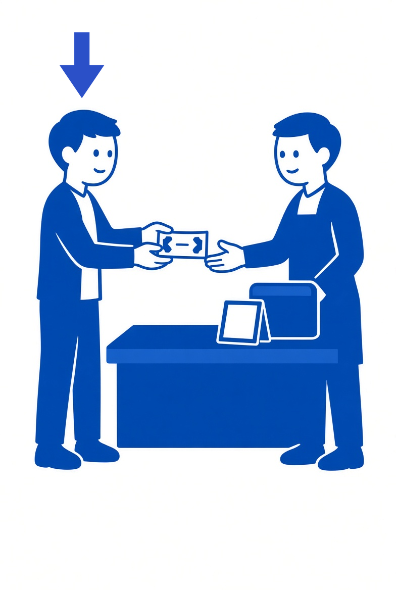
betalen
to pay
regelmatigrang 389Money & tradegetekend
- Scene
- one adult stands at a shop counter and lays a folded banknote flat on the counter towards a shopkeeper, who faces them with an open palm, the note halfway between the two hands. A price card stands in front of a box, and nobody holds any goods.
- Must read
- a banknote pushed flat across a counter into a shopkeeper's open palm.
- Avoid
- a note and a paper bag of apples meeting on a counter (kopen); a note pressed into a lowered hand (geven); a bag of apples held out over a market stall (verkopen); a receipt torn from a till and a card.
- Alt text
- Iemand schuift een opgevouwen briefje over de toonbank naar de winkelier.
betalen.png · rang 389 · A1 regelmatig · lexicon woorden.tsv
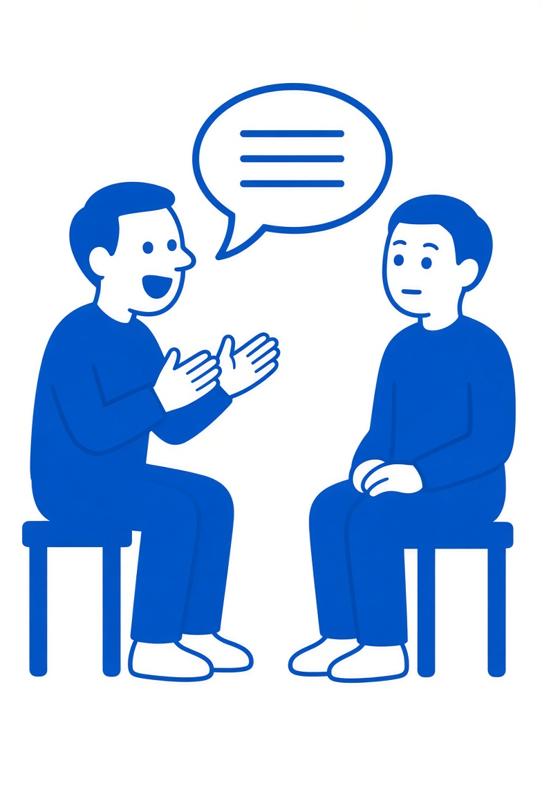
vertellen
to tell
regelmatigrang 415Communication & languagegetekend
- Scene
- one adult sits on a chair and leans forward with an open mouth, both hands shaping the air in front of the chest; opposite them a second adult sits still, eyes wide and fixed on the first. One broad speech bubble full of short plain lines arcs from speaker to listener.
- Must read
- one speaker leaning towards a seated listener beneath a long speech bubble.
- Avoid
- two adults facing each other with one narrow bar above each head (praten); one adult alone facing the viewer with a small bubble (spreken); a book held open with both hands (lezen); a phone against the ear (bellen); letters inside the bubble.
- Alt text
- Een volwassene gebaart met open mond naar iemand die stil op een stoel zit.
vertellen.png · rang 415 · A1 regelmatig · lexicon woorden.tsv

leiden
to lead
regelmatigrang 423Abstract & generalgetekend
- Scene
- one adult walks at the front of a small group with one arm raised straight forward and the hand pointing ahead; a second adult follows a step behind, and between them a thin taut rope is held at waist height by both. Both look ahead, not at each other.
- Must read
- one adult at the front with a raised arm, the second following on a rope.
- Avoid
- one adult walking behind another, both arms swinging (volgen); a hand held out flat at a car with its brake lights on (stoppen); a person swinging a flat bat with both hands (slaan); a person pushing ahead through a line (dringen).
- Contrast
- Pair with volgen. Same two walkers in a line: the raised arm and the front place are here, the same adult trails behind there.
- Alt text
- Een volwassene loopt voorop met de arm vooruit; een tweede volgt aan een touw tussen hen.
leiden.png · rang 423 · A1 regelmatig · lexicon woorden.tsv
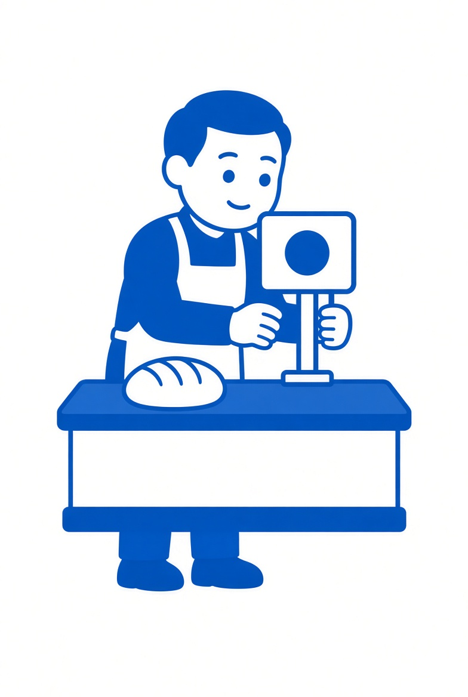
kosten
to cost
regelmatigrang 450Money & tradegetekend
- Scene
- one adult shopkeeper stands behind a counter and turns a price sign round on its stand so it faces the viewer, both hands on it and eyes on the sign; a round loaf lies on the counter below the sign. The sign shows a coin shape and no digits.
- Must read
- a shopkeeper turning a price sign towards the customer, one coin shape on it.
- Avoid
- coins and a note pushed across the counter (betalen); a paper bag of apples and a banknote meeting on the counter (kopen); a coin held out flat on an open palm (bieden); a hand pressing coins into the shopkeeper's palm (geven).
- Alt text
- Een winkelier draait met twee handen een bordje met een munt erop naar de kijker.
kosten.png · rang 450 · A1 regelmatig · lexicon woorden.tsv

wonen
to live (reside)
regelmatigrang 451House & homegetekend
- Scene
- one adult stands at the front door of a small house and turns a key in the lock with one hand, a bag of shopping in the other, the door just opening inwards; the house is one plain outline with a window, and nobody else is in the picture.
- Must read
- a key turning in a front door held by a person with shopping.
- Avoid
- a person with a suitcase walking away from a door (verlaten); a floor plan with a roof (bouwen); a bed with a person asleep in it (slapen); a person at a door with flowers for someone inside (bezoeken); a removal van (verhuizen).
- Alt text
- Iemand met een boodschappentas draait een sleutel om in de voordeur van een klein huis.
wonen.png · rang 451 · A1 regelmatig · lexicon woorden.tsv

stoppen
to stop
regelmatigrang 488Movement & positiongetekend
- Scene
- one adult stands at the kerb with one flat hand raised towards an approaching car, the palm up at shoulder height; the car has both brake lights on and its front bumper a metre away, the bonnet dipping. The person looks at the car, not at the viewer.
- Must read
- a raised flat palm and brake lights on a car just short of it.
- Avoid
- an adult standing still under a clock (wachten); one adult walking behind another on a rope (volgen); two adults breaking a loaf between them (delen); a hand flat on a shut door (sluiten); a red traffic light.
- Alt text
- Iemand houdt op de stoeprand een vlakke hand op naar een auto met brandende remlichten.
stoppen.png · rang 488 · A1 regelmatig · lexicon woorden.tsv
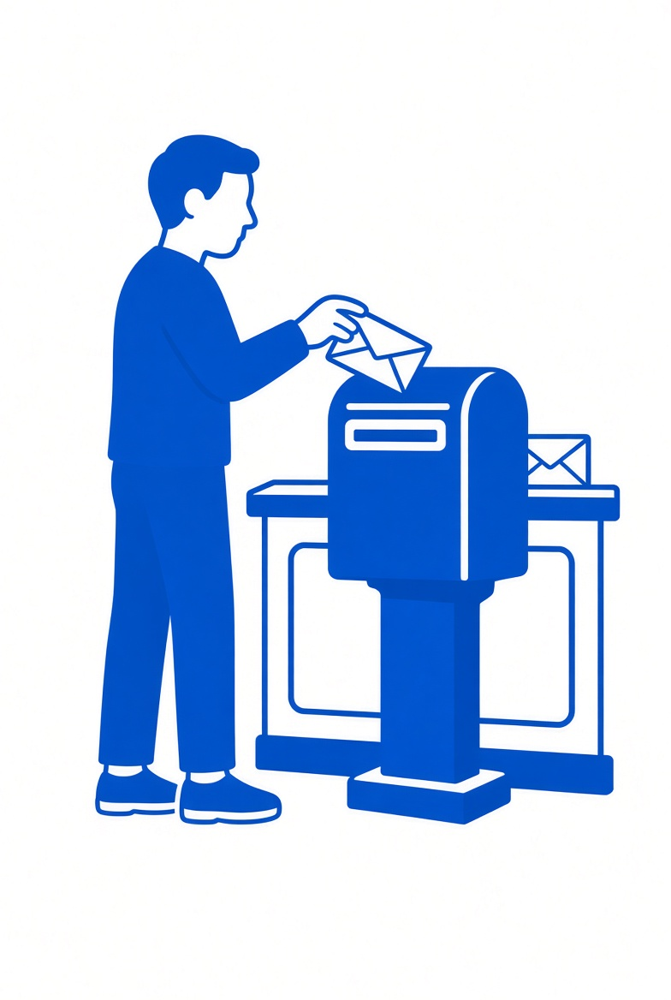
sturen
to send
regelmatigrang 532Movement & positiongetekend
- Scene
- one adult in a post office holds an envelope above the slot of a postbox, the flap down and the lower edge just touching the opening; the fingers still hold it and it has not gone in. A second letter lies on a counter behind them, and no other person is present.
- Must read
- an envelope held at the mouth of a postbox, not yet dropped.
- Avoid
- a cardboard box carried with both hands towards a half-open door (brengen); a box passing between two hands (geven); a letter laid flat on a table and let go (leggen); a phone at the ear (bellen).
- Alt text
- Iemand houdt een envelop boven de gleuf van een brievenbus, nog niet losgelaten.
sturen.png · rang 532 · A1 regelmatig · lexicon woorden.tsv
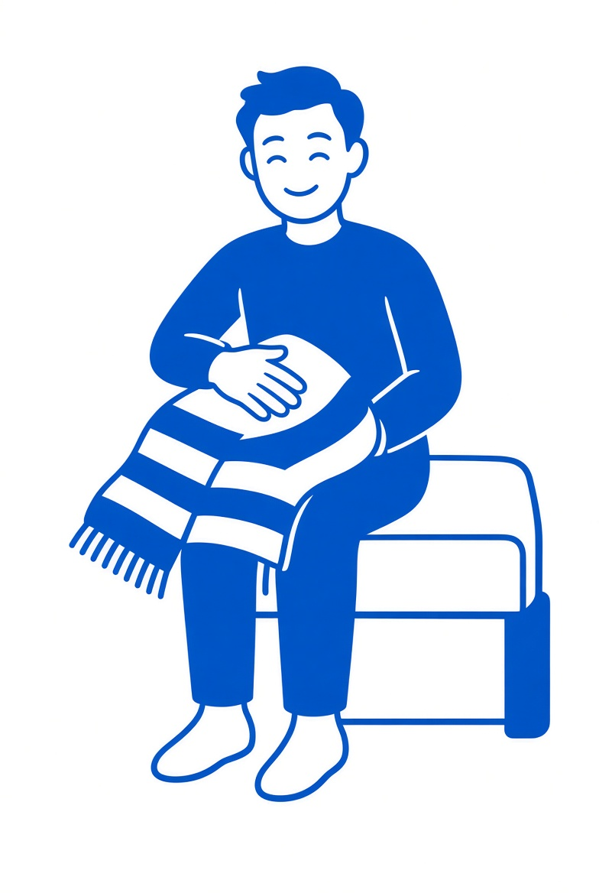
voelen
to feel
regelmatigrang 565Emotion & feelinggetekend
- Scene
- one adult sits on the edge of a bed with both eyes closed and one open palm pressed flat on a thick woollen scarf lying across the lap; the fingers are spread and the thumb rubs the cloth. Nothing is written or numbered, and no second person is present.
- Must read
- an open palm pressed flat on cloth, with the eyes closed.
- Avoid
- an open palm on one's own chest (zijn); a cupped hand behind an ear (horen); a hand flat against a closed door (slaan); a palm held out flat over a radiator.
- Alt text
- Iemand zit op een bed en strijkt met een vlakke hand over een dikke sjaal.
voelen.png · rang 565 · A1 regelmatig · lexicon woorden.tsv
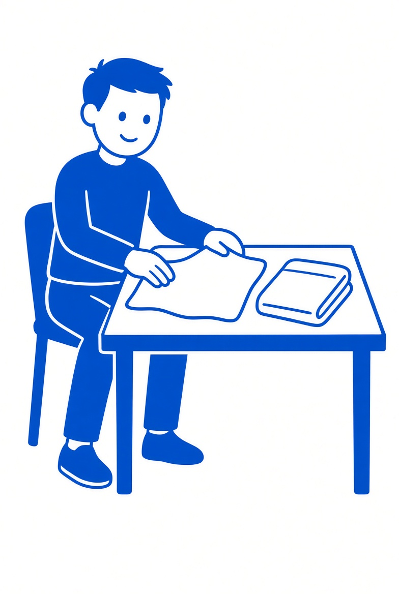
leggen
to lay (flat)
regelmatigrang 601Movement & positiongetekend
- Scene
- one adult sits at a plain table and lays a flat white cloth down so that it lies flat on the table top, one hand still smoothing the last corner; a second folded cloth lies flat beside the first. The cloth is on the surface, not in the air.
- Must read
- a cloth lying flat on the table while a hand smooths it down.
- Avoid
- a glass lowered onto a table with the hand still round it (zetten); a folded cloth seen from above in a row (vouwen); a cloth lifted off the table (pakken); a cloth hung over the back of a chair (hangen).
- Contrast
- Pair with zetten. Same hand on the same table: the object lies flat under a smoothing palm here, it stands upright as its base lands there.
- Alt text
- Iemand strijkt op een tafel een doek plat neer; ernaast ligt een tweede doek.
leggen.png · rang 601 · A1 regelmatig · lexicon woorden.tsv

pakken
to grab
regelmatigrang 616Abstract & generalgetekend
- Scene
- one adult stands at a shelf and closes one hand around the handle of a mug, the mug lifted a hand's width clear of the shelf and the arm drawn back; the other hand hangs empty at the side. Only that one mug is lifted, and the shelf holds no other cup.
- Must read
- a mug lifted clear off a shelf in one closed hand.
- Avoid
- a bottle carried back through a door to a waiting person (halen); a box carried in both arms across the room (dragen); a note pushed along a counter (betalen); both hands laid flat on a full crate (gebruiken).
- Alt text
- Iemand sluit een hand om een mok op een schap en trekt die naar zich toe.
pakken.png · rang 616 · A1 regelmatig · lexicon woorden.tsv
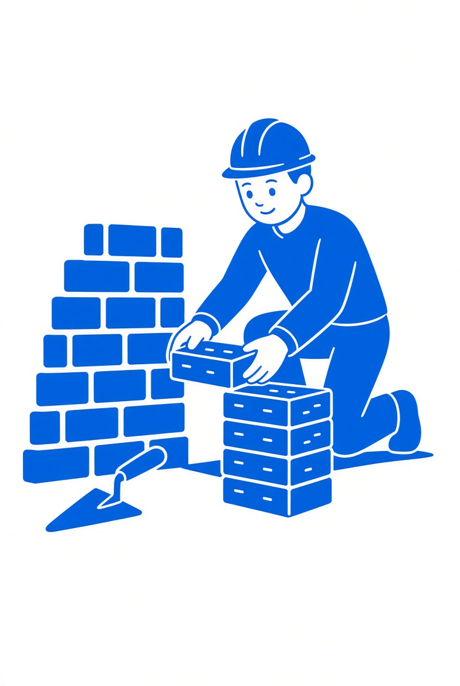
bouwen
to build
regelmatigrang 658Abstract & generalgetekend
- Scene
- one adult in a hard hat kneels on the floor and lowers a new house brick with both hands so a tower of four bricks stands beside it; the older half of a brick wall with wet mortar and a trowel reaches in from the left edge. The new brick is halfway down.
- Must read
- a new brick being lowered onto a growing wall.
- Avoid
- three planks nailed into a crate at a table (maken); a small tree pressed into a garden hole (plaatsen); a closed machine case with a screwdriver in it (repareren); a finished house standing whole with a path (wonen).
- Contrast
- Pair with slopen. Same brick wall: a brick is lowered into place here, the sledgehammer knocks bricks out there.
- Alt text
- Iemand zet met twee handen een nieuwe steen op een muur die half af is.
bouwen.png · rang 658 · A1 regelmatig · lexicon woorden.tsv

beschermen
to protect
regelmatigrang 687Abstract & generalgetekend
- Scene
- one adult bends over a small child and holds out a wide open umbrella over both of them, the handle gripped with one hand and the canopy tilted towards a slanting rain of plain bold strokes; the adult's free arm is curved around the child's shoulders.
- Must read
- an umbrella held over a child while an arm shields the shoulders.
- Avoid
- a note and a bag of apples meeting over a counter (betalen); one adult wrapping a blanket round a seated child (zorgen); an umbrella carried folded in one hand at the side (dragen); a raincoat on a hook.
- Alt text
- Iemand houdt een open paraplu boven een kind, de arm om de schouders, in de regen.
beschermen.png · rang 687 · A1 regelmatig · lexicon woorden.tsv

luisteren
to listen
regelmatigrang 726Communication & languagegetekend
- Scene
- one adult sits facing a small radio on a plain table, the body leaning in, one hand cupped behind an ear and the head tilted towards it. The radio gives off three bold curved lines. The person is alone and looks at nothing else in the room.
- Must read
- one adult leaning in with a hand behind the ear, facing a radio.
- Avoid
- two adults facing each other with open mouths and a bar above each head (praten); a head turned sharply from a book towards a ringing bell (horen); a phone held against the ear (bellen); a book open in the lap (lezen); letters on the radio.
- Contrast
- Pair with horen. Same adult in the same room: the body leans in with a hand behind the ear here, the head snaps round towards the sound there.
- Alt text
- Iemand zit voorover naar een radio en houdt een hand achter het oor.
luisteren.png · rang 726 · A1 regelmatig · lexicon woorden.tsv

bellen
to call (by phone)
regelmatigrang 735Communication & languagegetekend
- Scene
- one adult stands facing the viewer with a telephone held hard against one ear by that hand, the elbow raised out to the side, the other hand pressed flat on the hip, the mouth open and the eyes narrowed. A curled cord runs down from the phone to a pocket.
- Must read
- one hand holding a phone clamped to the ear, the mouth open.
- Avoid
- two adults facing each other with a bar above each head (praten); a seated person under a long speech bubble addressing a listener (vertellen); one adult alone facing the viewer with a small bubble (spreken); a hand behind an ear while sitting at a radio (luisteren).
- Alt text
- Iemand houdt een telefoon tegen een oor, elleboog opzij, en praat met open mond.
bellen.png · rang 735 · A1 regelmatig · lexicon woorden.tsv
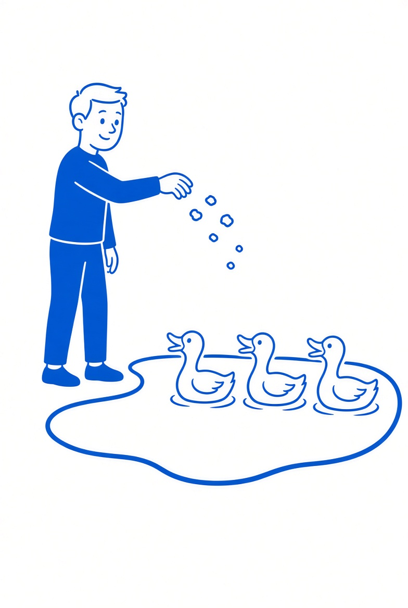
voeren
to feed (animals)
regelmatigrang 777Movement & positiongetekend
- Scene
- one adult stands at the edge of a pond and throws small pieces of bread from one hand towards three ducks on the water, the arm just swung forward and the crumbs in the air; the ducks swim towards the bread with their bills open.
- Must read
- bread thrown from a hand towards ducks on the water.
- Avoid
- a ball thrown for a dog (gooien); a person eating a sandwich on a bench (eten); a dog on a lead (uitlaten); a person walking at the front of a group (leiden).
- Alt text
- Iemand aan de rand van een vijver gooit stukjes brood naar drie eenden.
voeren.png · rang 777 · A1 regelmatig · lexicon woorden.tsv

stappen
to step
regelmatigrang 790Movement & positiongetekend
- Scene
- one adult stands on the bottom step of a short flight of stairs with one foot planted on the step and the other foot just lifting off the pavement; one hand rests on the rail, the body is upright and the eyes are on the top landing with a closed door.
- Must read
- one foot lifting off the pavement onto the bottom stair.
- Avoid
- a raised hand touching the rail at the top of the stairs (bereiken); both feet on the floor and the body straight, no stairs (staan); a person crouching to tie a shoe; a treadmill belt with speed lines (rennen).
- Alt text
- Iemand zet een voet op de onderste tree van een trap, de andere komt van de stoep.
stappen.png · rang 790 · A1 regelmatig · lexicon woorden.tsv

verdienen
to earn
regelmatigrang 805Abstract & generalgetekend
- Scene
- one adult stands behind a shop counter with both hands spread round a small pile of folded banknotes in front of them, at the instant a wooden till drawer is pushed open by the hip; a stack of three flat parcels lies beside the notes, and no other adult is present.
- Must read
- both hands around a pile of notes above an open till drawer.
- Avoid
- a note pushed across the counter into a palm (betalen); a price sign and a straw basket under the counter (kopen); one banknote on a flat open palm (bieden); a pay slip with digits on it.
- Alt text
- Iemand achter de toonbank houdt met twee handen een stapel briefjes vast.
verdienen.png · rang 805 · A1 regelmatig · lexicon woorden.tsv

reizen
to travel
regelmatigrang 853Transport & travelgetekend
- Scene
- one adult walks along a station platform from left to right with a suitcase in one hand and a folded ticket in the other, the suitcase held low and trailing a few centimetres behind the leg; a single railway track with sleepers runs beside the platform, and no train is visible.
- Must read
- an adult crossing a platform with a suitcase beside an empty rail track.
- Avoid
- both hands on a steering wheel on a road (rijden); a pilot in an aeroplane between clouds (vliegen); an adult standing still under a clock on a platform (wachten); an adult climbing the bottom step with a suitcase (stappen).
- Alt text
- Iemand loopt met een koffer en een kaartje langs een perron, naast het spoor.
reizen.png · rang 853 · A1 regelmatig · lexicon woorden.tsv
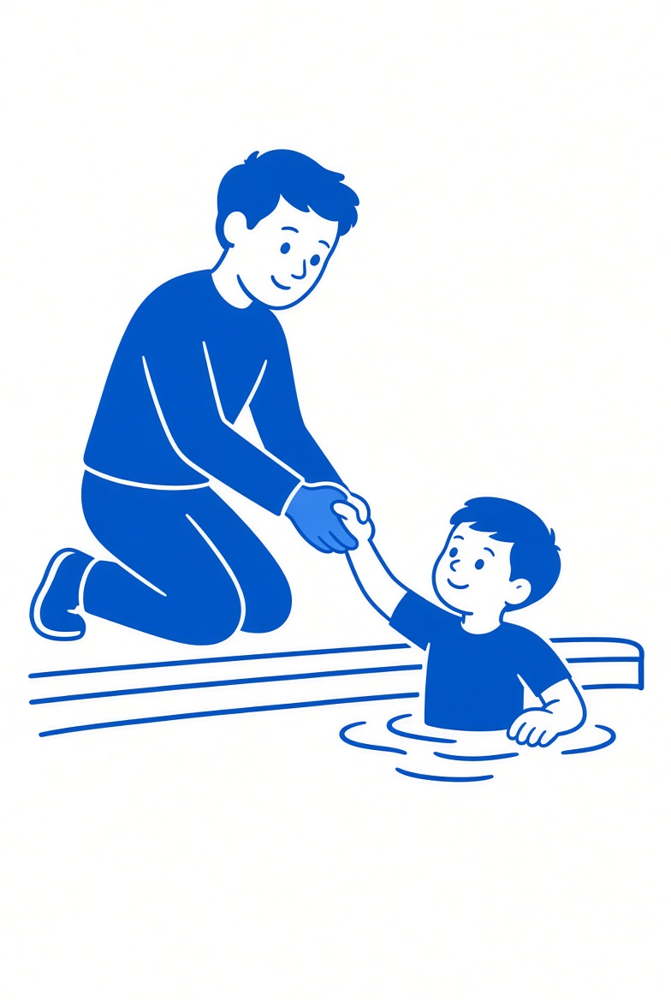
redden
to save (rescue)
regelmatigrang 879Abstract & generalgetekend
- Scene
- one adult kneels at the edge of a swimming pool and reaches down with one arm to grip the wrist of a child in the water; the child's hand is held above the surface and both their faces turn towards each other, with a second hand holding the pool edge.
- Must read
- an adult holding a child's wrist above the water at the pool edge.
- Avoid
- a note held out in one hand while the other lifts a bag (betalen); two adults breaking a loaf between them (delen); a blanket wrapped round a seated child (zorgen); a lifebuoy thrown through the air (gooien).
- Alt text
- Iemand aan de rand van een zwembad houdt een kind in het water bij de pols vast.
redden.png · rang 879 · A1 regelmatig · lexicon woorden.tsv
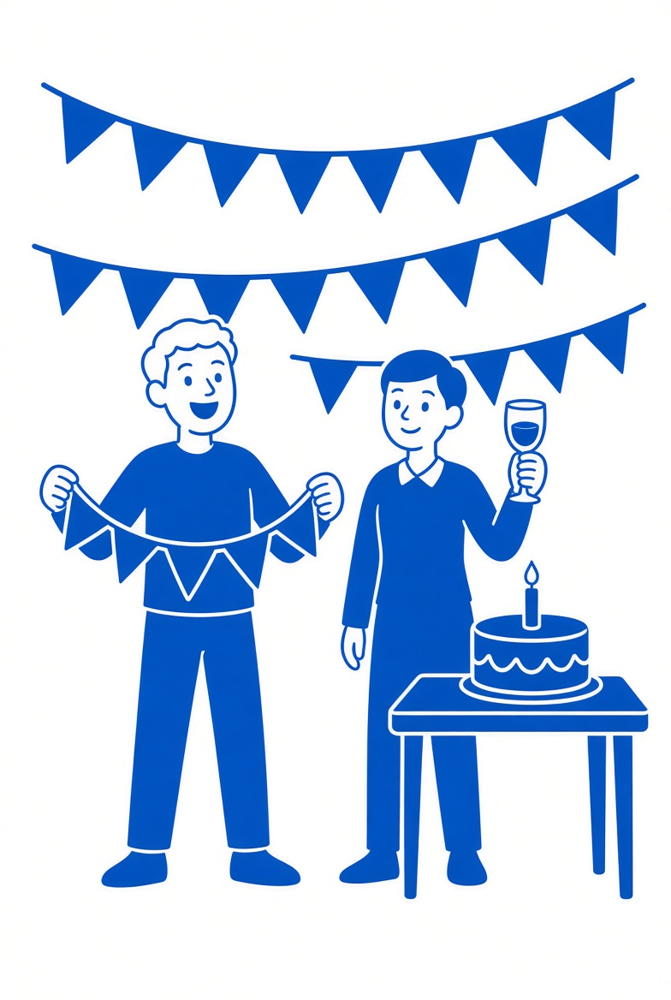
vieren
to celebrate
regelmatigrang 931People & relationsgetekend
- Scene
- one adult stands in a room with both arms raised high and a wide open smile, holding a paper garland at waist height between the hands; a second adult beside them raises a glass, and a small cake with a single candle sits on a table. Plain paper garlands hang behind them.
- Must read
- a person with both arms up beside a cake and a raised glass.
- Avoid
- one adult with both arms up holding a gold cup (winnen); one person at a table with a tablecloth laid flat (leggen); a person behind a counter pushing notes into a till (verdienen); a ribbon across a road with a crowd.
- Alt text
- Iemand steekt de armen hoog met een slinger; ernaast heft iemand een glas bij een taart.
vieren.png · rang 931 · A1 regelmatig · lexicon woorden.tsv
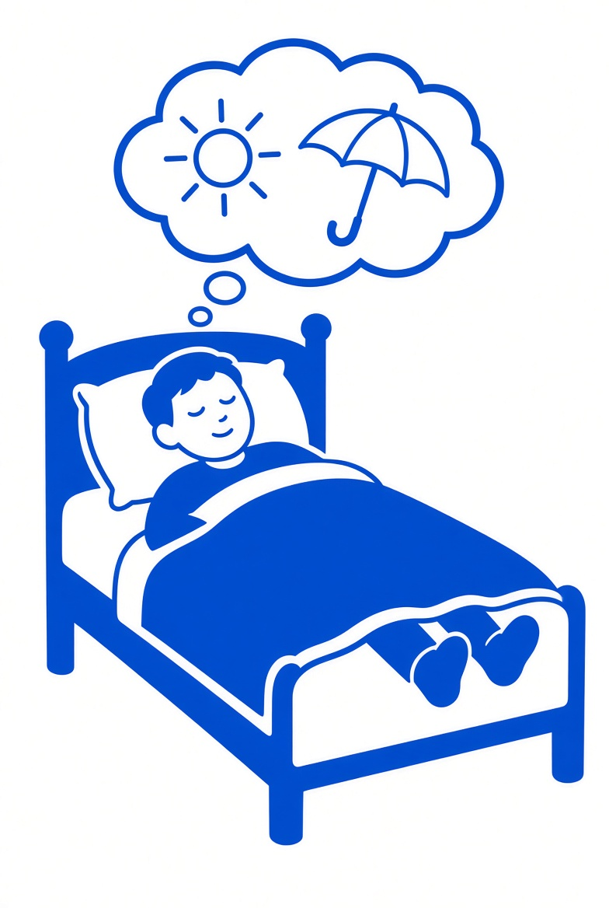
dromen
to dream
regelmatigrang 1000Body & healthgetekend
- Scene
- one adult lies asleep under a blanket with the eyes closed and the mouth relaxed; over the head floats a conventional cloud of thought bubbles with a small sun and a plain open umbrella inside. This is the conventional dream cloud; draw it as one symbol and put no letters or numbers in it.
- Must read
- a sleeping person with a cloud above the head holding a sun and an umbrella.
- Avoid
- a thought bubble with a question mark above a seated figure (denken); a lightbulb in a bubble above a head (weten); a figure lying flat on the bed with eyes open (liggen); a lamp with a light beam (lezen); letters in the cloud.
- Alt text
- Iemand slaapt onder een deken; boven het hoofd hangt een wolk met zon en paraplu.
dromen.png · rang 1000 · A1 regelmatig · lexicon woorden.tsv